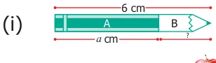
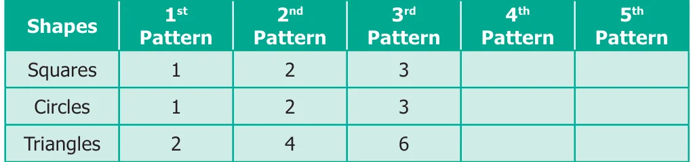
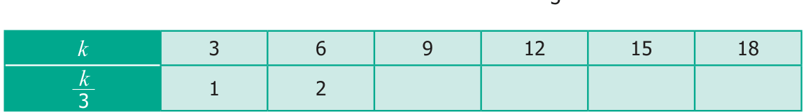
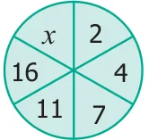

- Fill in the blanks.
- The letters a, b, c, … x, y, z are used to represent _________.
- The algebraic statement of 'f decreased by 5' is __________.
- The algebraic statement of 's divided by 5' is __________.
- If A's age is 'n' years now, 7 years ago A's age was ________.
- If 'p - 5' gives 12 then 'p' is __________.
- Say True or False.

The length of part B in the pencil shown is 'a - 6'.
- 'x' and the cost of a is ₹5, then the total cost of fruits
is ₹'x + 5'.
- 10 more to three times 'c' is '3c + 10'
- If the cost of 10 rice bags is ` 't', then the cost of 1 rice bag is ` \(\frac{'t'}{10}\) .
- The product of 'q' and 20 is '20q'.
- Draw the next two patterns and complete the table.

- Arivazhagan is 30 years younger to his father. Write Arivazhagan's age in terms of his father's age.
- If 'u' is an even number, how would you represent
- the next even number? (ii) the previous even number?
- Express the following verbal statement to algebraic statement.
- 't' is added to 100. (ii) 4 times 'q'. (iii) 4 less to 9 times of 'y'.
- Express the following algebraic statement to verbal statement.
- \(x \div 3\) (ii) \(11 + 10x\) (iii) 70s
- The teacher asked two students to write the algebraic statement for the verbal statement "8 more than a number". Vetri wrote '8 + x' but Maran wrote '8x'. Who gave the correct answer?
- Answer the following questions.
- If 'g' is equal to 300 what is the value of 'g - 1' and 'g + 1' ?
- What is the value of 's', if \('2s - 6'\) gives 30?
- Complete the table and find the value of 'k' for which 'k' gives 5.

Objective Type Questions
- Variable means that it
(a) can take only a few values (b) has a fixed value
(c) can take different values (d) can take only 8 values - The number of days in 'w' weeks is
- \(30 + w\) (b) 30w (c) \(7 + w\) (d) 7w
- The value of 'x' in the circle is

- 6 (b) 8 (c) 21 (d) 22
- The value of 'y' in \(y + 7 = 13\) is
- \(y = 5\) (b) \(y = 6\) (c) \(y = 7\) (d) \(y = 8\)
- 6 less to 'n' gives 8 is represented as
- \(n - 6 = 8\) (b) \(6 - n = 8\) (c) \(8 - n = 6\) (d) \(n - 8 = 6\)